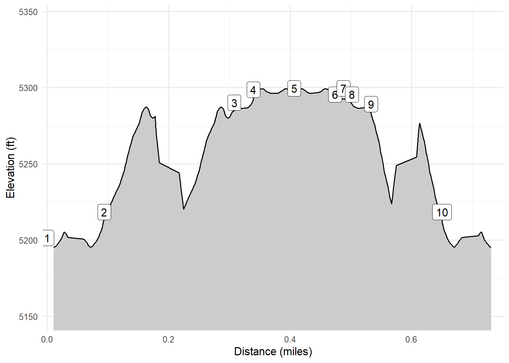

Mesa Point Trail at Boca Negra Canyon
Petroglyph National Monument, Albuquerque, NM
On February 20, 2023 Kim and I walked Mesa Point Trail in Boca Negra Canyon in Petroglyph National Monument just outside Albuquerque. This very short, paved walk had a large number of petroglyphs. Well worth the stop.
Walk-Specific Map
Elevation Profile

Images

BNMP02: Petroglyph

BNMP03: Petroglyph

BNMP03: Petroglyph

BNMP05: Petroglyph

BNMP05: Petroglyph

BNMP05: Petroglyph

BNMP06: Petroglyph

BNMP01: Petroglyph
GPX Download
A sanitized GPX file of our hike is here.
Summary Information
| NUM | trackID | Primary | Description | Distance | CumDist | DeltaElev |
|---|---|---|---|---|---|---|
| 1 | BNMP01 | Mesa Point TR in Boca Negra Canyon | Parking lot to Lower split in trail | 0.09 | 0.09 | 17 |
| 2 | BNMP02 | Mesa Point TR in Boca Negra Canyon | Lower split in trail to Upper split in trail | 0.21 | 0.31 | 72 |
| 3 | BNMP03 | Mesa Point TR in Boca Negra Canyon | Upper split in trail to Split for close-up view | 0.03 | 0.34 | 5 |
| 4 | BNMP04 | Mesa Point TR in Boca Negra Canyon | Split for close-up view to Peak | 0.07 | 0.41 | 1 |
| 5 | BNMP04 | Mesa Point TR in Boca Negra Canyon | Peak to Split for close-up view | 0.07 | 0.47 | -1 |
| 6 | BNMP05 | Mesa Point TR in Boca Negra Canyon | Split for close-up view to Close-up view | 0.01 | 0.49 | 4 |
| 7 | BNMP05 | Mesa Point TR in Boca Negra Canyon | Close-up view to Split for close-up view | 0.01 | 0.50 | -4 |
| 8 | BNMP03 | Mesa Point TR in Boca Negra Canyon | Split for close-up view to Upper split in trail | 0.03 | 0.53 | -5 |
| 9 | BNMP06 | Mesa Point TR in Boca Negra Canyon | Upper split in trail to Lower split in trail | 0.12 | 0.65 | -71 |
| 10 | BNMP01 | Mesa Point TR in Boca Negra Canyon | Lower split in trail to Parking lot | 0.09 | 0.74 | -17 |